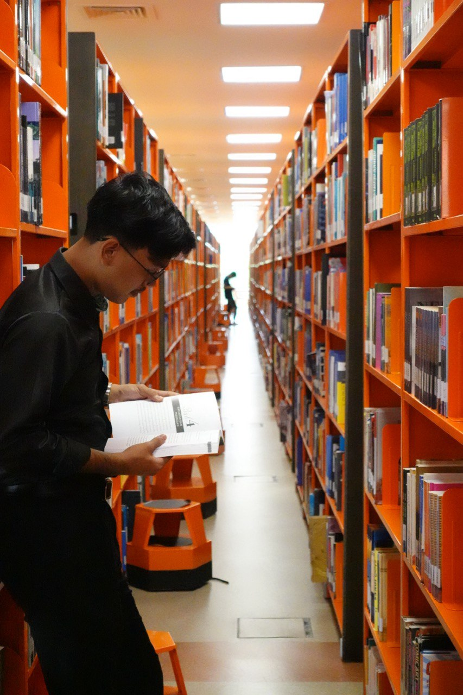
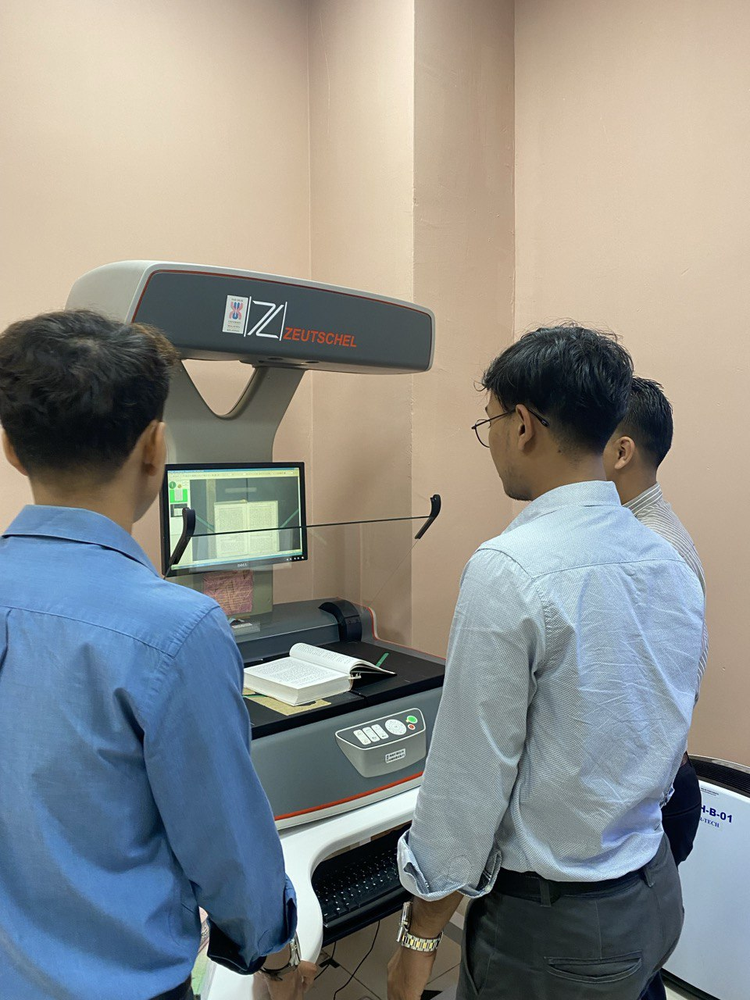
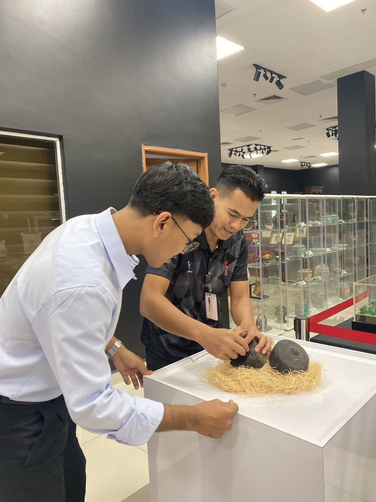

Career Journey
My Experience
Throughout my studies and development journey, I have participated in several projects and gained industry exposure as follows:
- Freelance Web Developer – 2024
Designed portfolio websites, basic e-commerce systems, and info pages using HTML, CSS, and JS. - Internship at Pejabat Perpustakaan Dan Pengurusan Ilmu (PPI) – 2025
Worked in information management and digital documentation processes.
Internship Experience

Cataloging digital materials at PPI

Team briefing session during internship how to use Zeutschel Scanner

Arranging the musem material at Gallery and Museum & MCP Section